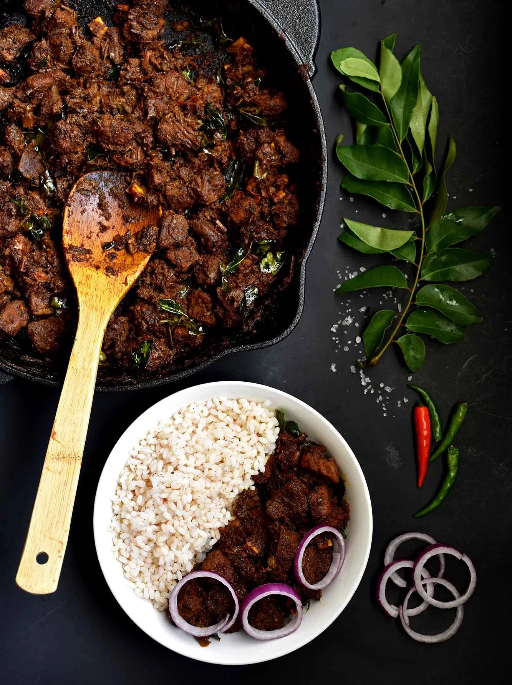

Beef Ularthiyathu

Beef is best savored among Malayalees in a fry or roast (ularthiyathu) preparation. The country style beef roast, cooked in iron pans with a lot of curry leaves bring out a unique flavour and aroma which tastes beyond words! The best combination with beef roast is a side of Kerala Porottas; a layered flat bread made with flour. Beef dishes with porotta are very popular among the street foods of Kerala; it is such an exquisite dish that, be it a road side stall or a star hotel, you will find the same love and authenticity given to its preparation. And not to mention, I’ve heard that the Toddy shops serve yummilicious beef dishes that taste from out of this world!!
Ingredients
- Beef
- Shallots
- Chillies
- Ginger Garlic Paste
- Red Chillies
- Coriander Poweder
- More...
Method
-
Clean and cut beef into cube shaped pieces (preferably soup cut).
-
Cook the beef in a pressure cooker with salt, pepper powder, meat masala, and a little water just enough to cover the meat. Pressure cook for 2 whistles and then remove the cooker from the flame. Allow it to rest until the pressure goes off. Keep aside.
-
Heat oil in a pan and splutter mustard seeds. Add curry leaves, sliced shallots, green chilies, and a little salt. Saute until the onions turn translucent.
-
Add ginger garlic paste, saute for a minute until the smell resides.
- More...
Home